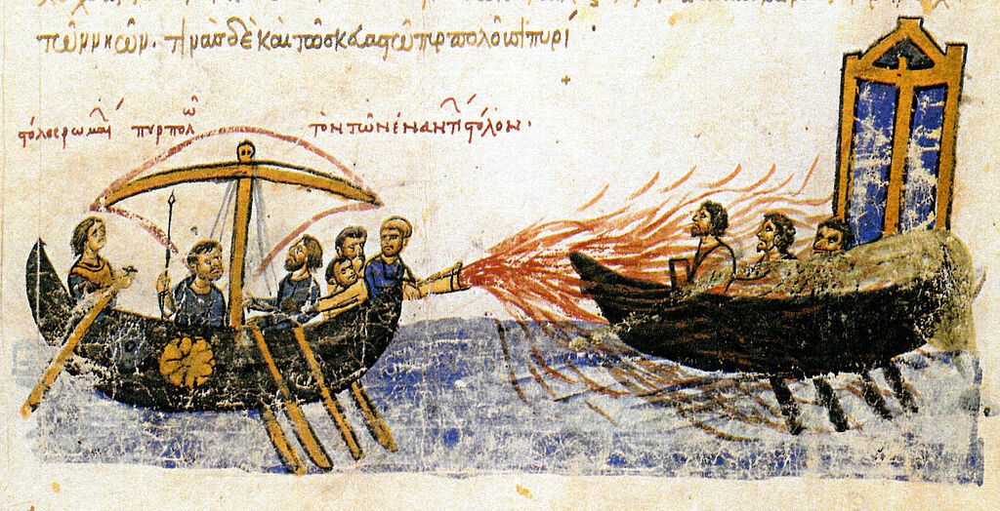

Собрать воедино и выложить в одном месте всю информацию о греческом огне – желание неисполнимое. И по объему, и по взаимной противоречивости эта информация превратится в совершенно непотребную смесь исторических фактов, исторических мифов, гипотез, домыслов и фантазий, исторических и альтернативно-исторических, химических и алхимических, найти в которой рациональное зерно будет не так уж просто. Поэтому постараемся не уклоняться далеко от достоверно известных фактов и свидетельств.

Использование греческого огня против флота Фомы Славянина. Миниатюра из «Хроники» Иоанна Скилицы. XII век. Codex Skylitzes Matritensis, Bibliteca Nacional de Madrid.
Прежде всего о термине. Чтобы не возникало никаких сомнений, сразу же подчеркнем, что (пока!) под греческим огнем мы будем понимать само горючее вещество, независимо от способа его доставки в расположение войск противника и вне зависимости от того, кто его применял: мусульмане или христиане, византийцы или латиняне. Ну и конечно приоритет мы будем отдавать использованию греческого огня на море. К рассмотрению греческого огня как системы оружия мы обратимся позже.
Первым документальным свидетельством о греческом огне и его изобретателе является запись в хронике Феофана Исповедника (ок.760-818):
л. м. 6164, р. х. 664.
В сем году явилась на небе необыкновенная радуга в феврале и марте месяцах и вострепетала всякая плоть; все говорили, что настал конец мира. В это время отвержники Христа, соорудивши великий флот, проплывши Киликию, зимовали Муамед сын Абделы в Смирне, Каисос в Киликии и Ликии. В Египте случилась великая смертность. Послан Халеб эмир с другим флотом на помощь первому, как человек искуснейший и отважнейший на сражении. Но Константин, узнавши о движении богоборцев против Константинополя, и сам устроил двухпалубные огромные корабли с горшками огненосными, и быстрые корабли с огненными сифонами, и приказал им напасть на неприятеля в Проклианизийской пристани при Кесарии.
л. м. 6165, р. х. 665.
В сем году упомянутый флот богоборцев, двинувшись к Фракии, протянулся от западного мыса Евдомы, или Магнавры до восточного мыса Кикловиа. Всякий день происходила сшибка от утра до вечера; от рукава златых врат до Кикловиа толкали друга и отталкивали. В таких сшибках провели время с апреля месяца до сентября; тут отступили враги к Кизику и, занявши его, здесь зимовали. С наступлением весны опять двинулись и возобновили войну на море с христианами. До семи лет продлили эту войну, наконец, посрамленные помощью Божьею и Богородицы, потерявши много храбрых мужей, со множеством раненых отступили с великою досадою. На возвратном пути сей Богом гонимый флот застигнут был жестокою бурею, при Силее, и совершенно был сокрушен. Суфиан сын Аифа и меньший брат его между тем сразились против Флора, Петрона и Киприана, которые начальствовали над римским войском. Здесь тридцать тысяч аравитян побито. В это время зодчий Каллиник, прибежавший к римлянам из Елиополиса Сирийского, морским огнем, который им изобретен, сожег им и корабли и все дышущее. Таким образом римляне возвратились с победою и изобрели морской огонь.
Летопись византийца Феофана от Диоклетиана до царей Михаила и сына его Феофилакта (пер. с греч. В. И. Оболенского и Ф. А. Терновского. 1884 г.)
Мы должны сделать несколько замечаний.
Во-первых, Феофан не соблюдает хронологическую последовательность событий, о которых ведет рассказ.
Во-вторых, родина изобретателя огня, Каллиника (Καλλινικός) , Елиополис Сирийский (Ἡλιουπόλεως ), – это древний город Гелиополь, нынешний Баальбек в Ливане.

На развалинах Баальбека. 1977 год
Были историки, которые полагали, что Каллиник прибыл из египетского Гелиополиса. Об этом пишет, например, Георгий Кедрин (George Kedrenos, Synopsis historiōn). Он считает Каллиника основателем рода “Lampros”(γενεὰ τοῦ Λαμπροῦ), в котором из поколения в поколение передавали секрет «морского огня». С этим трудно согласиться, так как невозможно представить себе малоизвестную семью, которая на протяжении шести веков (сочинения Кедрина относятся к XII веку) хранила стратегически важнейшие военные секреты. Впрочем, по имени Lampros – блеск, греческий огонь в литературе называли иногда «блестящим огнем» (πῦρ λαμπρόν - pyr lampron). Конечно же, название «греческий огонь» по отношению к новому виду оружия никак не могло появиться у Феофана: византийцы считали себя римлянами, ромеями, и слово «грек», «греческий» было едва ли не ругательным. Феофан называет новое оружие «морским огнем» πῦρ θαλάσσιον (pyr thalassion) или «мокрым огнем» πῦρ ὕγρον (pyr hygron).
В-третьих. «Двухпалубные огромные корабли с горшками огненосными» - diēreis – диеры. Мы помещали уже их изображение;

а быстрые корабли с огненными сифонами – это дромоны, оснащенные греческим огнем. О них мы уже много написали и еще больше, надеюсь, напишем. Феофан в подлиннике значительно более конкретен, чем это выглядит в переводе.
И еще одно замечание. Феофан в своей «Летописи» использует александрийскую эру от сотворения мира, по которой считалось, что Рождество Христово произошло в 5501 г., а не в 5508 г., как это принято по византийской эре, получившей распространение в более поздние века. В переводе В. И. Оболенского и Ф. А. Терновского даты от рождества Христова пересчитаны исходя именно из числа 5501. Поэтому имеется некоторое несовпадение (ок. 7 лет) с принятой сейчас датировкой событий (см. наш пост о военно-политической обстановке того периода, где первое наступление арабов на Константинополь отмечено 673 годом).
Свидетельства Феофана о греческом огне повторяет в De administrando imperio Константин Багрянородный (905-959):
Следует знать, что при Константине, сыне Константина, называемого также Погонатом, некий Каллиник, перебежавший к ромеям из Илиуполя, изготовил жидкий огонь, выбрасываемый через сифоны, с помощью которого ромеи, сжегши флот сарацин у Кизика, добыли победу.
Константин Багрянородный. Об управлении империей. Наука, М. 1991
Не знаю, существовал ли в военной истории прошлого секрет, охраняемый так строго, как секрет греческого огня. Константин Багрянородный пишет об этом так, что до костей пробирает:
Должно, чтобы ты подобным же образом проявлял попечение и заботу о жидком огне, выбрасываемом через сифоны. Если кто-нибудь когда-нибудь дерзнет попросить и его, как многократно просили у нас, ты мог бы возразить и отказать в таких выражениях: "И в этом также [бог] через ангела просветил и наставил великого первого василевса-христианина, святого Константина. Одновременно он получил и великие наказы о сем от того ангела, как мы точно осведомлены отцами и дедами, чтобы он изготовлялся только у христиан и только в том городе, в котором они царствуют, - и никоим образом не в каком ином месте, а также чтобы никакой другой народ не получил его и не был обучен [его приготовлению]. Поэтому сей великий василевс, наставляя в этом своих преемников, приказал начертать на престоле церкви божией проклятия, дабы дерзнувший дать огонь другому народу ни христианином не почитался, ни достойным какой-либо чести или власти не признавался. А если он будет уличен в этом, тогда будет низвержен с поста, да будет проклят во деки веков, да станет притчею во языцех, будь то василевс, будь то патриарх, будь то любой иной человек, из повелевающих или из подчиненных, если он осмелится преступить сию заповедь. Было определено, чтобы все питающие рвение и страх божий отнеслись к сотворившему такое как к общему врагу и нарушителю великого сего наказа и постарались убить его, предав мерзкой [и] тяжкой смерти. Случилось же некогда - ибо зло вечно выискивает местечко, - что один из наших стратигов, получив всевозможные дары от неких иноплеменников, передал им взамен частицу этого огня, но, поскольку бог не попустил оставить безнаказанным преступление, когда наглец вздумал войти в святую церковь божию, пал огонь с неба, пожрал и истребил его. С той поры великие страх и трепет обуяли души всех, и после этого никто более, ни василевс, ни архонт, ни частное лицо, ни стратиг, ни какой бы то ни было вообще человек, не дерзнули помыслить о чем-либо подобном, а тем более на деле попытаться исполнить либо совершить это".
Там же
Покусившийся на передачу секрета «жидкого огня» «стратиг», или "первый гребец" – это не только начальник над всеми гребцами корабля, но также и мастер, отвечавший за действие сифонов с "греческим огнем".
Для нас уже давно нет секрета в том, что на Средиземном море не существовало секретов, которые держались бы более нескольких десятков лет. В ходе многочисленных морских сражений корабли одной из сторон неизбежно попадали в руки противника, зачастую вместе с членами экипажа и всеми военными тайнами. Но секрет греческого огня избежал такой судьбы. Почему?
Продолжим изучать этот вопрос в следующий раз.